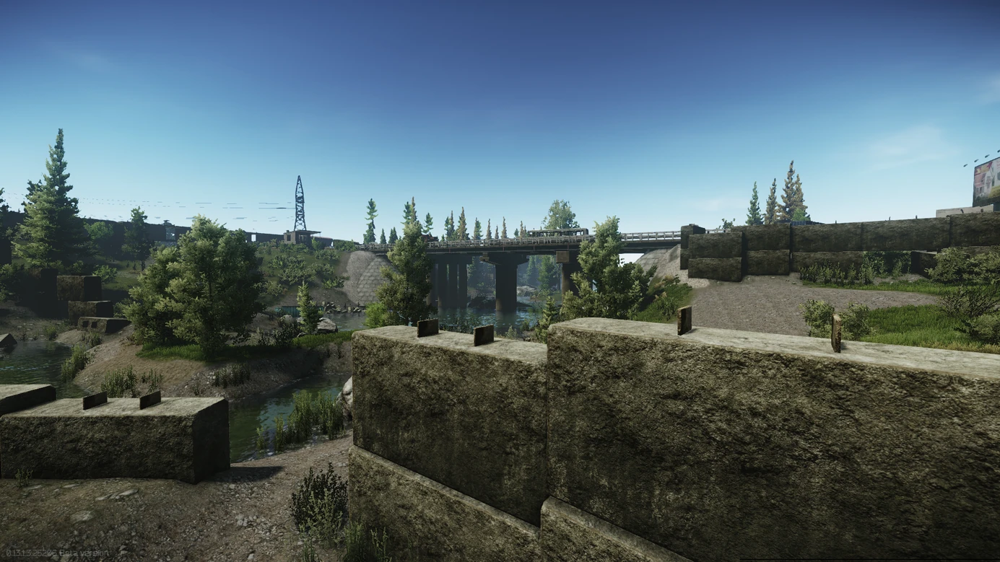

Mapa Customs

Mapka przedstawiająca główne obszary lokacji. Warto zapoznać się z jej szczegółami przed rozpoczęciem gry, aby orientować się w terenie.
Strona poświęcona lokacji "Customs" w grze Escape from Tarkov. Znajdziesz tutaj mapę, opisy miejsc oraz przydatne informacje.
Customs to jedna z najbardziej zróżnicowanych lokacji w grze Escape from Tarkov. To teren przemysłowy, pełen zarówno niebezpiecznych wrogów NPC, jak i graczy. Zawiera wiele budynków, mostów i przestrzeni otwartych, które stwarzają doskonałe warunki do zarówno walki, jak i szukania zasobów.
Mapka przedstawiająca główne obszary lokacji. Warto zapoznać się z jej szczegółami przed rozpoczęciem gry, aby orientować się w terenie.
Dorms to jedno z najważniejszych miejsc w Customs, gdzie często dochodzi do intensywnych walk. Jest to obszar z dużą liczbą budynków, który może być pełen wrogów.

Most na rzece to kluczowe miejsce w Customs, które jest często celem graczy i NPC. Jest to strefa, w której często dochodzi do walk.
{kind=link}
{kind=link}
{kind=link}
{kind=link}